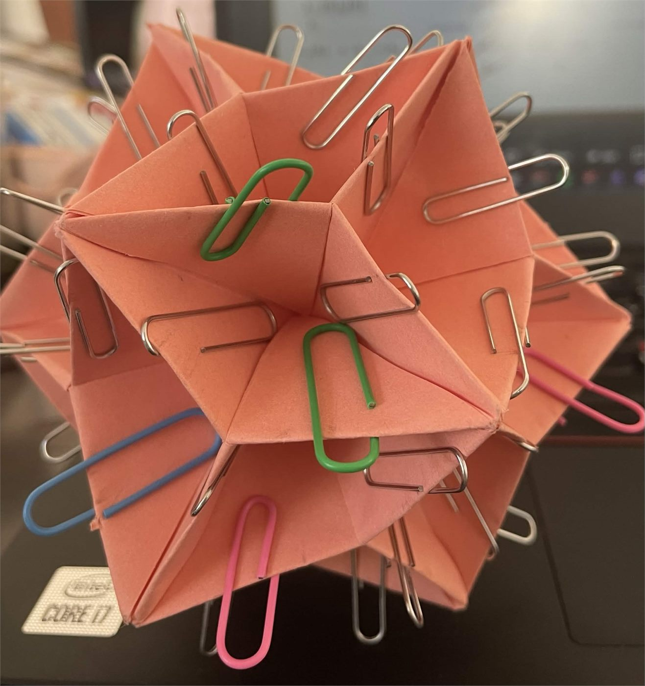
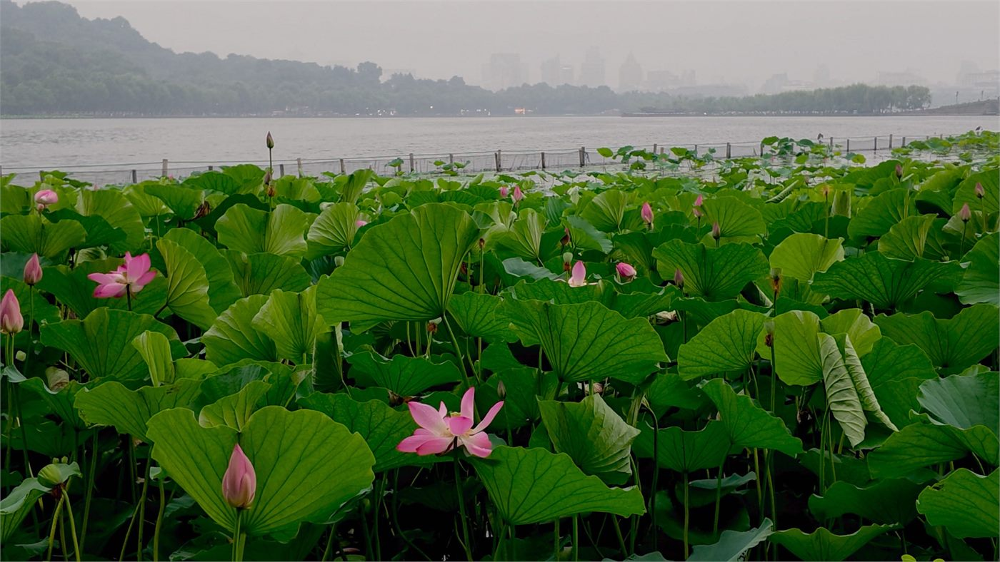
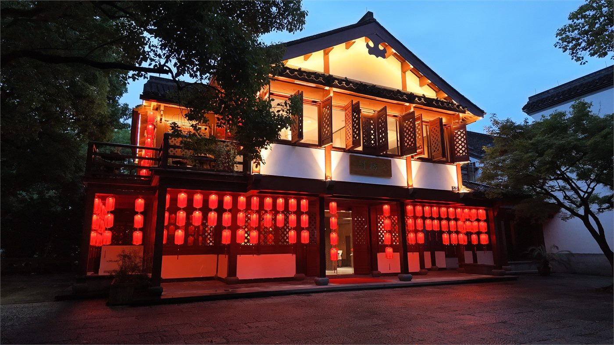
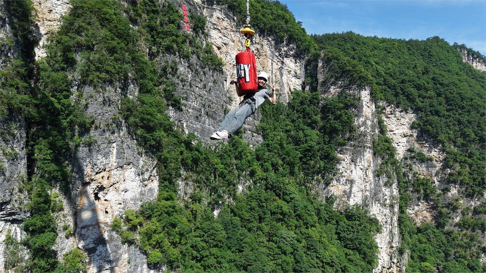
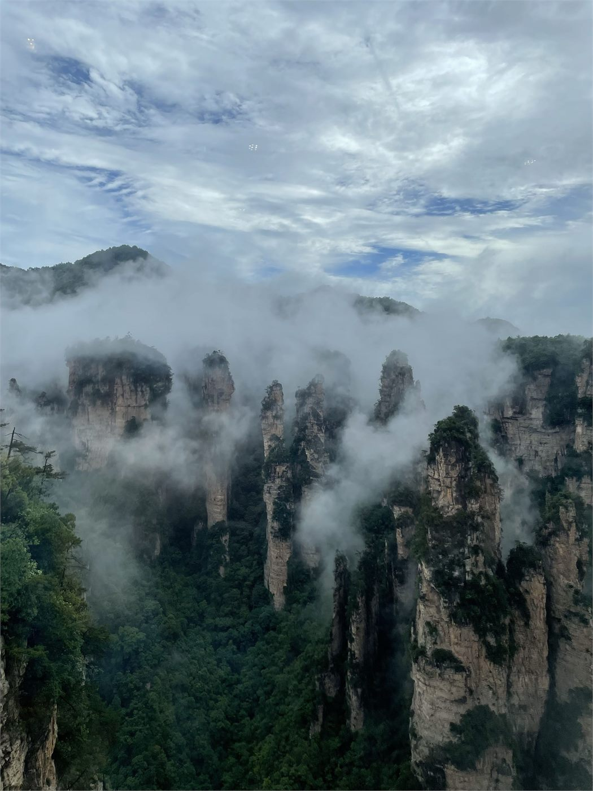

i like eliciting emotion, mainly joy and whimsy.
i'm particularly interested in algeba / number theory and ai safety / model optimization / llms / physical ai. i like math for its beauty and its importance as a building block to everything. moreover, i'm interested in contributing to the ai revolution that's taking place, simultaneously furthering its progress and minimizing the harm it can cause / is causing. in my past life i did math contests; problem-solving is really fun.
i'm currently into research around math and ai. i worked on a paper published in communcations in algebra: "On the set of atoms and strong atoms in additive monoids of cyclic semidomains"
i've been skating for... 11 years now! i have all my doubles other than double axel :) i mainly compete in showcase. i also have done toi and excel. i used to do toi and i also am on a hs skating team (contact me to join if you're a high schooler within the bay area! we accept all skill levels). my skating is in this playlist.
i am a very avid music listener!!! particularly pop (k-pop! hyperpop!) and r&b
this includes: language-learning, sketching, ceramics?, kusudama, cats, food, nature, karaoke, rock climbing, hiking, coffee, barista-ing, museums, art, cityscapes, studio ghibli, small talk, deep talk
fav book: the sirens of titan by kurt vonnegut
i was a barista for a bit where i made lots of iced lattes and sandwiches. now i pretend to be a food critic. add me on beli: @annappy
i write, somewhat poorly. find my substack(s)
now here are some images!
capybaras i made yay

i like cats. i feed three stray cats :) here is one we affectionately named "flower cat"

a totoro-themed bakery in boston called japonaise bakery.

pretty pictures i took of flowers from ireland


some kusudama



i really want to get into photography. here are some noob attempts from the scenery in china with a dji osmo pocket 4.

night photography??

i like tall things. here's when i jumped off the clear bridge at zhangjiajie (260 m, 2nd highest bungee jump in the world). i want to skydive someday!

avatar mountains. really pretty place.

now if you have made it this far here are some recommendations of things that i think you should check out!
some resources
my favorite skating programs to watch